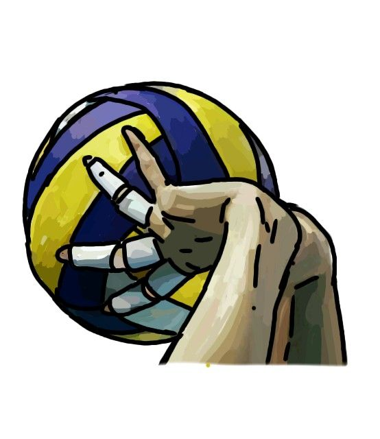
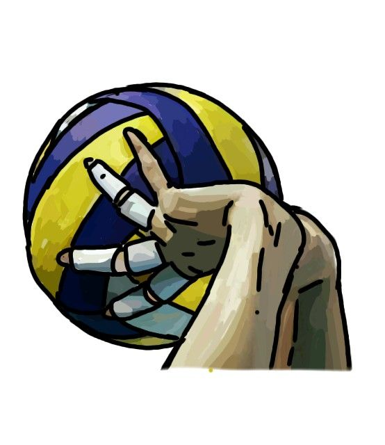
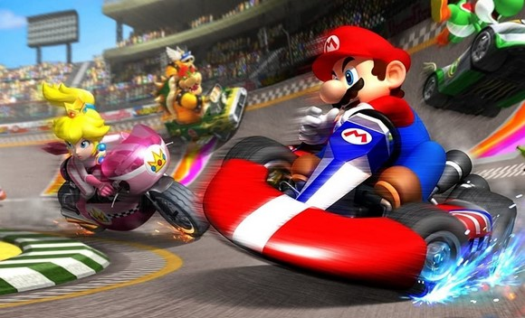

I'm Loan Beltran and I'm currently 18 (2005).
I'm doing a Postgraduate Diploma in Networks and Telecommunications and my job is to create a website to present myself on the Internet.
I'll let you discover me through the different pages that are in front of you.
You'll find that I'm a very jovial and enthusiastic person who doesn't shy away from a challenge.
"Il faut toujours viser la lune, car même en cas d'échec, on atterit dans les étoiles." - Oscar Wilde
My passion is horror. Ever since I was a child, I've been fascinated by fear, whether through books, films or video games. Take a look at the Passion to find out more.
 

I've also been playing volleyball for 3 years now. I'm not as good as some of the top players, but this sport allows me to take a breather from the daily grind. I enjoy hitting the ball and letting off steam.
I started out at a small club near my home, and now I'm at the IUT with other players who are much stronger than me. I enjoy playing against them, I'm not afraid of a challenge and I'm always keen to improve.
Like any young adult, I like to relax and video games help me to do that. I thrive on playing strategy games or simply challenging myself.


Principal objective: Teacher Researcher
To become a teacher-researcher, I'd first like to finish my BUT with the DevCloud course and do my third year abroad. Then I'd like to go to engineering school and finish with a PhD.
This is the route I would like to take at the moment. It is quite possible that it will evolve with time and my experiences.